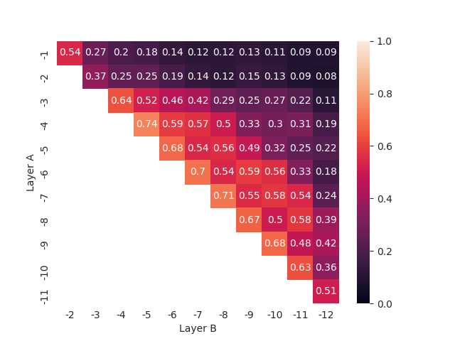
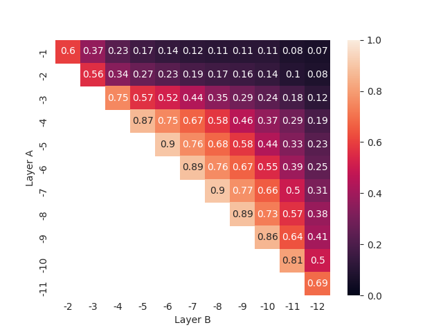
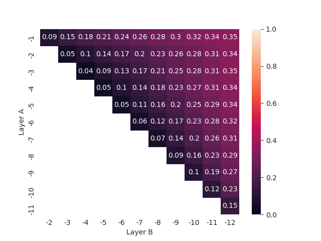
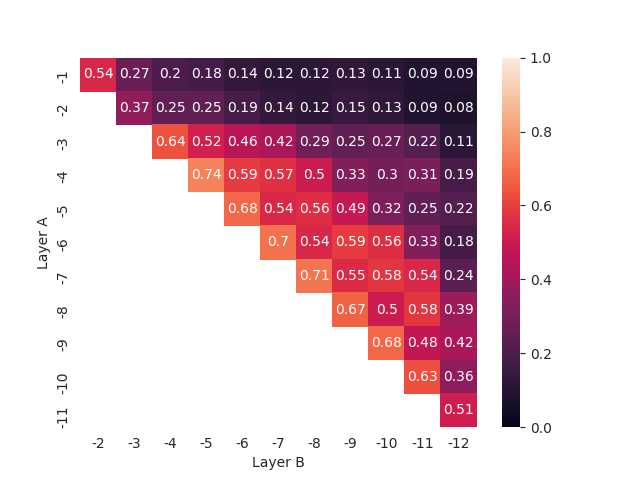
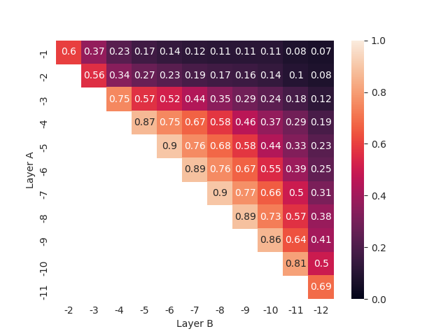
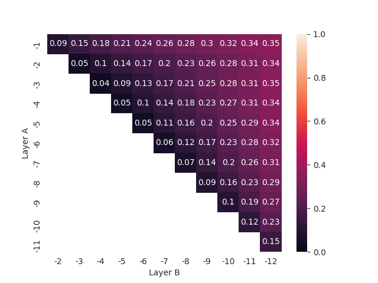

D Intra-model Similarity for All Models
Figure D.1: Intra-model RSA (left) and PWCCA (right) scores across layers’ combinations for the ALBERT model fine-tuned on perceived complexity annotations (PC) using the [CLS] token (top), the all-token average (middle), and all tokens (bottom) representations. Layer -1 corresponds to the last layer before prediction heads.
Figure D.2: Intra-model RSA (left) and PWCCA (right) scores across layers’ combinations for the ALBERT model fine-tuned in parallel on gaze metrics (ET) using the [CLS] token (top), the all-token average (middle), and all tokens (bottom) representations. Layer -1 corresponds to the last layer before prediction heads.
![Intra-model RSA (left) and PWCCA (right) scores across layers’ combinations for the ALBERT model fine-tuned on readability assessment annotations (RA) using the [CLS] token (top), the all-token average (middle), and all tokens (bottom) representations. Layer -1 corresponds to the last layer before prediction heads.](figures/appendix/A4_pwcca_intra_cls_ra.png) 

Figure D.3: Intra-model RSA (left) and PWCCA (right) scores across layers’ combinations for the ALBERT model fine-tuned on readability assessment annotations (RA) using the [CLS] token (top), the all-token average (middle), and all tokens (bottom) representations. Layer -1 corresponds to the last layer before prediction heads.